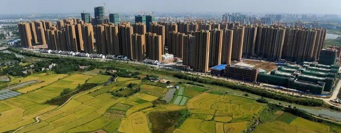
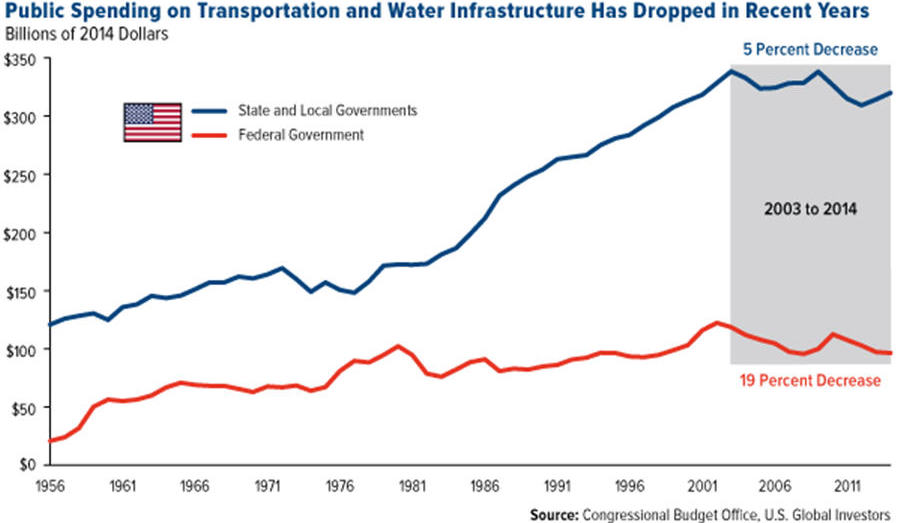
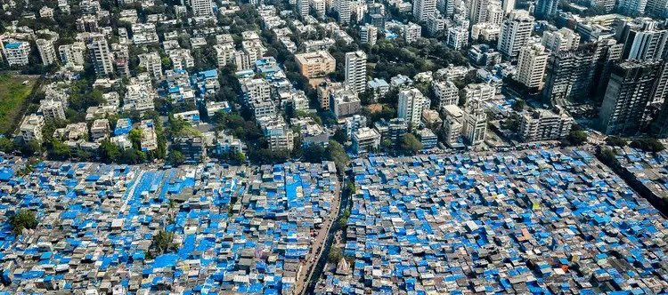
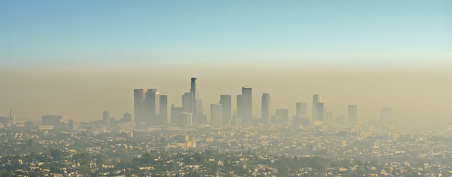

| It's projected that over two thirds of the world will live in cities by 2050. Although urbanization is currently a global phenomenon, it's only a new practice in history that hasn't yet been perfected and comes with its challenges. Cities are the future of settlements, and therefore should be built resilient, instead, they are frequently unsustainable, noninclusive, and not durable. |  |
|  | Cities require an array of services to function and sustain a high quality of life for their residents. Often times, cities don't have adequate resources in their budgets to sustain or build required services, causing complications in availability of transportation, parks, energy, water, waste, healthcare, and education. Declining spending, a factor in inavailability of city services is commonly increasing (see chart). |
| There are often inclusivity problems in city planning. Aside from funding the services of a city, governments also have to layout and design urban areas, which is often ignored and leads to worsened inclusivity of services. Nearly a quarter of the world's urban population lives in slums with little to no acess to services, and only half of city residents have easy acess to public transit and parks; a lack of attention to urban planning leads to noninclusive cities. |  |
|  | Cities are commonly environmentally unsustainable. Housing half the global population and having a high rate of consuption, cities leave larger environmental impacts on the planet and their residents. The high concentration of carbon emissions in urban areas is harmful to health, and contributes to the millions of yearly premature deaths due to air pollution. |